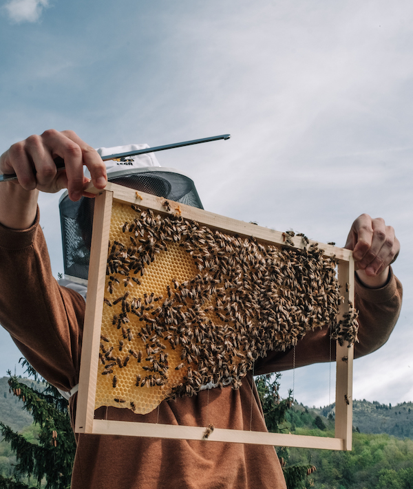
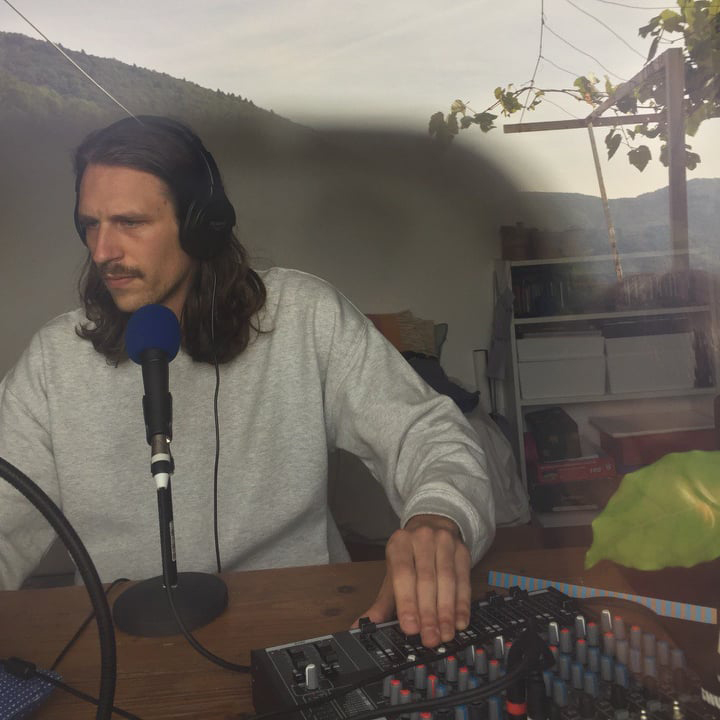

Aljaž Škrlep (1993) je magister profesor filozofije in slovenistike, Novogoričan, ki se je leta 2018 iz Ljubljane preselil v vas Topolò/Topolove (IT) v Benečiji. Tam je postal jedrni član kolektiva Robida, ki deluje na presečišču pisane in govorjene besede – z revijo Robida in Radijem Robido – ter prostorskih in umetniških praks, razvitih v odnosu do vasi Topolò/Topolove, kjer kolektiv živi in deluje, gosti umetnike in javne dogodke, delavnice in seminarje.
Aljaž Škrlep vodi radijsko produkcijo in kurira teoretsko sekcijo Robidinega programa.
Za svoje delo in projekt Vas kot hiša je kolektiv leta 2022 prejel nagrado Novega evropskega Bauhausa, ki jo podeljuje Evropska komisija.
Za časopis Novi Matajur piše rubriko O malih rečeh, v kateri se trudi opravljati t. i. novo delitev čutnega in hermenevtiko okolja, ki ga obdaja v vsakdanjem življenju, pri čemer poskuša na sodoben način brati iz naravne ter kulturno-zgodovinske krajine prostora ter ju premisliti s pomočjo teoretskih tokov sodobne teorije, kot so posthumanizem, novi materializem, kritična živalska in rastlinska teorija itn.
Kot literarnega teoretika ga zanimajo marginalne prakse pisanja, filozofija literature ter sodobna literarna teorija; zanimajo ga deleuzijansko razumljena deteritorializacija jezika, manjšinska književnost in literarno jecljanje nasploh. Kot filozof, ustvarjalec in človek, ki živi na meji, pa v zadnjem času večino svojega teoretskega dela posveča premislekom koncepta meje ter pojmovnega polja in imaginarija, ki ta pojem obdajata. Veliko svojega časa pa posveča posredovanju in komunikaciji teh vsebin, kar počne predvsem preko radijskega dela — projekta Radio Drugega/The Other Radio, ki nastaja v sklopu programa EPK GO!25 —, kolumnističnega pisanja ter vodenja delavnic.
Aljaž je tudi amaterski čebelar ter velik občudovalec obskurnih in komercialnih horror filmov, zapostavljenih filozofov in bolj ali manj dogmatične metafizike.
→ instagram
→ skrlep.aljaz@gmail.com

Aljaž Škrlep (1993) holds a master's degree of philosophy and Slovene studies. He is originally from Nova Gorica, studied in Ljubljana and then moved to the village of Topolò/Topolove (IT) in Benečija. There he became a core member of the Robida Collective which works at the intersection of the written and spoken word - with Robida magazine and Radio Robida - and spatial and artistic practices developed in relation to the village of Topolò/Topolove, where the collective lives and works, hosts artists and public events, workshops and seminars.
Aljaž Škrlep manages radio production and co-curates the theoretical section of Robida's program.
In 2022, the collective received the New European Bauhaus award, which is awarded by the European Commission, for its work and the project "Village as House".
For the newspaper Novi Matajur, he writes the On Small Things collumn, in which he tries to do a, so called, new distribution of the sensible or the hermeneutics of lived environment that surrounds him in everyday life, while trying to read in a modern way from the natural and cultural-historical landscape of the place of Benečija and rethink them with the help of theoretical currents of contemporary theory, such as posthumanism, new materialism, critical animal and plant theory etc.
As a literary theorist, he is interested in marginal writing practices, the philosophy of literature and contemporary literary theory; he is interested in Deleuzian deterritorialization of language, minority literature and literary stutterings in general. As a philosopher, creator and a person who lives on the border, he has recently devoted most of his theoretical work to considerations of the concept of the border and the conceptual field and imaginary surrounding it. He devotes much of his time to the transmission and communication of these contents, which he does mainly through radio work — Radio Drugega/The Other Radio project, which is created as part of the EPK GO!25 program —, columnist writing and conducting workshops.
Aljaž is also an amateur beekeeper and a great admirer of obscure and commercial horror films, neglected philosophers and more or less dogmatic metaphysics.
→ instagram
→ skrlep.aljaz@gmail.com